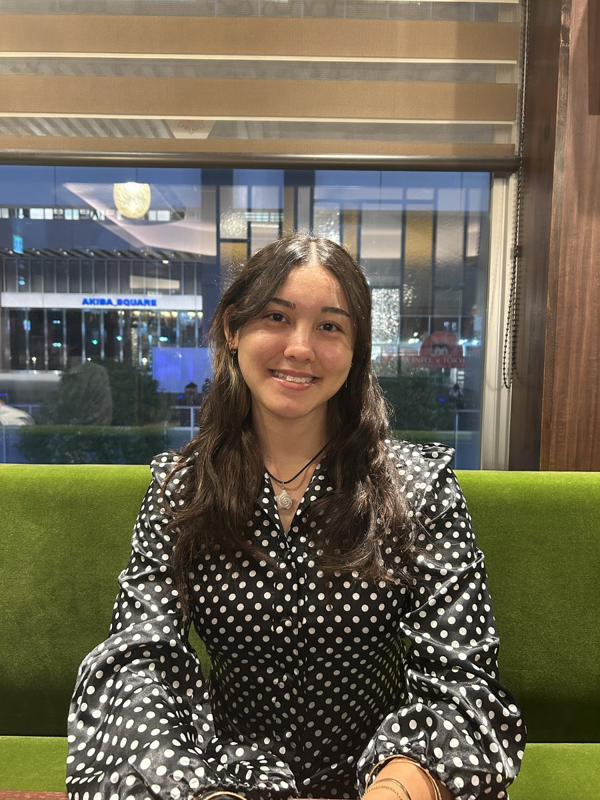

Mechanical engineering student focused on robotics, manufacturing, and CAD — from concept sketches to fabricated hardware.

A quick look at the kind of engineering work I do — more detail on the Projects page.
Designing and fabricating a modular, weather-resistant rover chassis for a NASA JPL-advised competition team.
Built simulation environments and tested autonomous navigation software during an internship at Booz Allen Hamilton.
Hands-on fabrication with waterjet, 3D printing, and press tooling, backed by tolerance analysis and CAD design.